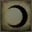
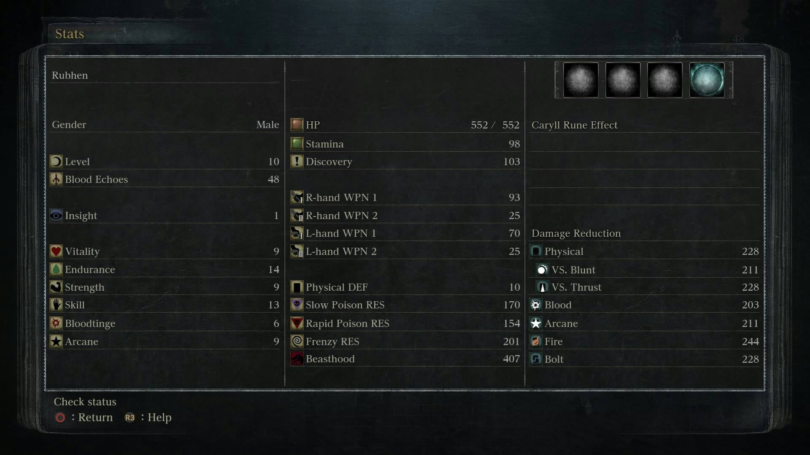

Stats are player attributes in Bloodborne. When you level up in Bloodborne you increase an attribute by one point. Attributes like Strength and Skill are represented by numerical values and determine what armor and weapons can be equipped, while attributes like Arcane and Bloodtinge govern how much damage certain Weapons or Items do. Attributes also give your characters increased stats, e.g. Vitality increases your hit points and Endurance improves your Stamina.
- See Status Effects for information about debuffs and their effects on various stats.
- See Stat Calculators for leveling calculators.
- You must Channel Blood Echoes at the Plain Doll to level up.
Primary Stats
 Level
Your character's current level, as determined by your expenditure of attribute points.
Level also affects the amount of physical defense you have, see Defense Increase per Level.
 Blood Echoes
Blood Echoes
Blood Echoes are the main currency in Bloodborne.
- Echoes are obtained by killing enemies, consuming Coldblood, or selling items. They can be consumed in Hunter’s Dream and Chalice Dungeons to purchase items from the Messengers or to level up by talking to the Plain Doll.
- Upon death in one's own world, all echoes will be lost and left on the ground where the player perished. One can then retrieve these echoes by returning to that location and either picking them up or slaying a nearby enemy who has stolen the echoes. Echoes will not be lost when one dies as a summon.
 Insight
Insight
Insight is a minor currency that represents the depth of one's inhuman knowledge.
- Insight is obtained by encountering and slaying bosses, discovering certain areas, speaking to certain NPCs, or consuming Madman's Knowledge, Great One's Wisdom, Blood Dregs, or One Third of Umbilical Cord.
- Insight is consumed by ringing the beckoning bell to call for help from other players (consumes 1 Insight each time the bell is rung) and purchasing items from the Messengers. Note that the Insight Messengers are only available when one is currently holding 1 or more Insight.
- Insight also triggers certain events in the game. For instance, Lesser Amygdalas around the world will become visible after one obtains more than 40 Insight.
- Holding more Insight increases the character's susceptibility to Frenzy and reduces the Beasthood stat. At 15 Insight or higher, the game spawns additional enemies and certain enemies receive a buff.
- Insight is not lost upon death, but can be stolen by Brainsuckers.
Vitality
The Vitality stat governs HP (hit points).
- Once you reach 30 in Vitality you will start to see diminishing returns, after 50 (the soft cap) you will see a more severe drop-off all the way up to 99 (the hard cap.)
Endurance
The Endurance stat governs stamina and resistances.
- Once you reach 40 (soft cap) in Endurance you gain almost no benefit for each further point invested, although you still gain an increase in resistances all the way up to 99 (the hard cap). There is no encumbrance system in Bloodborne.
- At 40 Endurance you will have 160 Stamina, after which you can gain 1 stamina every 6 levels up to 170 stamina at level 99 (the last point of stamina takes only 5 levels.)
 Strength
Strength
The Strength stat governs heavy physical weapon ATK as well as increasing visceral damage. Determines whether or not you can use certain weapons.
- Strength increases trick weapon damage. Strength based weapons receive more benefit from each invested strength point than other weapons. Once you reach 25 in Strength you will start to see diminishing returns, after 50 (the soft cap) you will see a more severe drop-off all the way up to 99 (the hard cap).
 Skill
Skill
The Skill stat governs more nuanced physical weapon ATK and increases your visceral damage. It also Determines whether or not you can use certain weapons.
- Skill increases trick weapon damage. Skill based weapons receive more benefit from each invested skill point than other weapons. Once you reach 25 in Skill you will start to see diminishing returns, after 50 (the soft cap) you will see a more severe drop-off all the way up to 99 (the hard cap).
- Visceral attack damage increases significantly with Skill above 18 with steep diminishing returns after 50.
 Bloodtinge
Bloodtinge
The Bloodtinge stat governs power of weapons that deal Blood damage (like most firearms and the Chikage, Bloodletter and Simon's Bowblade).
It determines whether or not you can use certain weapons.
- Once you reach 25 in Bloodtinge you will start to see diminishing returns, after 50 (the soft cap) you will see a more severe drop-off all the way up to 99 (the hard cap.)
 Arcane
Arcane
The Arcane stat governs power of Arcane ATK. Determines whether or not you can use certain weapons. Also increases Discovery Rates.
- Once you reach 25 in Arcane you will start to see diminishing returns, after 50 (the soft cap) you will see a more severe drop-off all the way up to 99 (the hard cap.)
- Despite all trick weapons have an arcane scaling, investing in arcane does nothing to increase these weapons' physical damages. Instead this value project how high its elemental damage would be if it was infused with elemental Blood Gems.
- The increase to discovery will cap out at 50 arcane with 209 discovery. Increasing arcane more only affects elemental damage scaling.
Secondary Stats
 HP
HP Discovery
Discovery
The rate at which items will drop from enemies. The higher the number the more frequently they will drop.
Defensive Stats
 Physical DEF
Physical DEF Slow Poison RES
Slow Poison RES Rapid Poison RES
Rapid Poison RES
Resistance to rapid poison attacks. The higher this attribute, the more resistant you are.
Frenzy RES
Resistance to the lure of frenzy. The higher this attribute, the more resistant you are. Frenzy carves out roughly 70 to 80% of your max HP.
Beasthood
The higher this attribute, the closer you are to beasthood when temporary transformed. (Note: raising the Beasthood meter will not transform your character into a beast. However, the Beast Claw's transformed state does give you beast arms, and the Beast's Embrace rune transforms your character's appearance and makes them weaker to Fire and vs. Beast damage, with the benefit of stronger beasthood and an improved move-set for the Beast Claw).
Damage Reduction
 VS. Blunt
VS. Blunt VS. Thrust
VS. Thrust Blood
Blood Arcane
Arcane Bolt
BoltOffensive Stats
 Physical ATK
Physical ATK
Determines the damage of your trick weapon (normal physical damage).
- The physical damage a weapon deals is determined by the weapon itself (its type, upgrade level and installed blood gems) as well as your character stats. By investing points into the strength and skill stats, your weapons will do more damage, the exact amount of which depends on the weapon.
- Note that despite all weapons displaying an arcane scaling, increasing arcane will have no effect on the weapon's damage unless they do physical and arcane damage (burial blade, blade of mercy, logarious' wheel) or physical and bolt damage (Tonitrus).
- Furthermore, each weapon's bonus physical attack rating consists of a main bonus damage (+x right after the physical attack rating) as well as a blunt rating and thrust rating (seen underneath the physical ATK stat in the weapon screen). These ratings are increased along with the main bonus damage, but there are also specialized blunt/thrust blood gems which increase the blunt/thrust rating only. The blunt/thrust ratings work by replacing the main bonus damage stat when a blunt or thrust attack is executed.
 Blood ATK
Blood ATK
Determines the damage of your firearm and weapons that deal Blood damage like the Chikage, the Bloodletter and Simon's Bowblade.
- The blood damage a firearm deals is determined by the weapon itself (its type, upgrade level and installed blood gem) as well as the bloodtinge stat (the higher the more damage). Blood damage is a different damage type that corresponds to blood defense rather than physical defense.
- Note that blood ATK is not to be confused with status effects such as rapid poisoning, which is similar to bleed in previous Dark Souls games.
- Also note that 3 left hand weapons: flamesprayer, (hunter's) torch, and rosmarinus do not deal blood damage.
 Arcane ATK
Arcane ATK
This stat determines your arcane damage.
 Fire ATK
Fire ATK
This stat determines your fire damage.
 Bolt ATK
Bolt ATK
This stat determines your bolt/lightning damage.
 QS Bullet Use
QS Bullet Use
Qucksilver bullets are used for guns, cannon and arcane magic items
 Durability
Durability
This determines how much damage your weapon can take before breaking (weapon does not disapear when broken)
Special Attack
 Slow Poison ATK
Slow Poison ATK
Determines the Slow poison stackup. This is the poison which stacks up to become a damage over time as we know.
 Rapid Poison ATK
Rapid Poison ATK
Determines the rapid poison stackup. This works not as a "poison" and does not give the target a damage over time. (It works like Bleed in Dark Souls 1 & 2)
 VS. Kin
VS. Kin VS. Beasts
VS. Beasts
In-game Stat Screen

 Anonymous
AnonymousUnder Arcane Stat Description it says: "Despite all trick weapons have an arcane scaling, investing in arcane does nothing to increase these weapons' physical damages. Instead this value project how high its elemental damage would be if it was infused with elemental Blood Gems." However weapons such as the Burial Blade and Blades of Mercy state:
This weapon shares many similarities with the Blade of Mercy.
Both weapons innately scale with Arcane.
Neither can be buffed by external sources.
Neither weapon changes its damage type when Arcane, Fire, or Bolt gems are applied (though both receive the full effect of flat damage gem effects)".
That doesn't match up?
- Anonymous
Endurance hard capping stamina at 40 is definitely incorrect. Somewhere between 45-50 you will get 1 more point. I didn't do the math, but at that rate, you would probably only gain like 5-ish stamina by 99. Not really worth it IMO, but you WILL go past 160 stam.
- Anonymous
Saying that you will will get no more stamina after 40 Endurance is a lie, putting one point into Endurance after 40 won't get a one point of stamina, but if you keep upgrading it pass 41 you will eventually get another point... with all of this being said however, you're still better off upgrading a different state once you're Endurance is at 40 unless you're going for the max level.
- Anonymous
- Anonymous
Why do people stop at level 120, is there any problem in trying to keep improving all your stats for example to the soft cap? Diminishing returns? Limit? Pardon my ignorance.
- Anonymous
Why is it that the r0 Ludwig's Holy Blade and Saw Spear, despite both having a D rank attribute bonus for Skill and Strength, have differing proportions of bonus damage? Like mine are 80% and 64% of the base damages respectively. I've seen that there are values for attribute bonus increases on blood gems, could it be that there's that big of a difference even in the same attribute bonus rank?
- Anonymous
Can you change stats like in dks 3? My str/bt build needs more health but I put my stats into strength and bloodtinge and I only have 15 in vitality
- Anonymous
Under Offensive Stats, the stat description is out-of-sync with the stat header
- Anonymous
Why does it say that Rapid Poison is similar to Bleed in Dark Souls 1? Rapid Poison is equivalent to Toxic and Bleed is similar to Frenzy. Makes me think the person who wrote only played Dark Souls 2. Which works differently to this, DS 1 and DS 3
- Anonymous
I just got the game yesterday and i sold my hunter axe for a kirkhammer and i really dont like it so how do imget my hunter axe back
- Anonymous
You can get stamina over 40 endurance just very little like 1 every 5-6 levels
- Anonymous
Does anybody know what the soft caps are in this game? Kinda like there is soft caps and hard caps in DS Trilogy, I'm just wondering because I'm doing like a Warrior and Pyromancer build in DS Trilogy with magic because most bosses are immune to fire in DS Trilogy. So if anybody can help me out here started the game again after taking a break from DS Trilogy if there is Soft caps would be greatful and thank you. I am a rookie at bloodborne so just curious I know triangle is to heal unlike in DS Trilogy it doesnt heal so any thoughts on Soft Caps or even Hard Caps in Bloodborne?
- Anonymous
Why was beasthood listed as a defensive stat by the game developers?
- Anonymous
So thrust damage seems to improve when used as a punishment after an enemy’s attack or attempt to dodge, just like in Dark Souls, but does blunt have any sort of technical advantage like that? Does it perhaps help to break poise, break limbs, or deal extra damage to “open enemies?” Or is it simply a more specialized form of physical attack?
- Anonymous
- Anonymous
Would it be wrong to think that I can make the game easier by levelling up? I'm thinking that enemies might scale up with player level, so is there a "sweet spot" where someone should stop levelling?
- Anonymous
Maybe the hard cap in the past has been referred to as the point at which a stat cannot be increased any further, but isn't it a little redundant to identify it, given it will ALWAYS be 99?
- Anonymous
So does Physical Defense just cover all dmg that isn't Blunt or Thrust? If an enemy is attacking with Blunt attacks would it be smarter to maximise Blunt defense over Physical?
- Anonymous
Soft cap - when diminishing returns increase (e.g. Skill drops off at 25 and at 50, making those the soft caps); Hard cap - when a stat cannot go any further (e.g. Skill cannot be increased past 99 whatsoever)
- Anonymous
so to round things all out, bring everything to 25, then vitality to 30, endurance to 40,
after that bring strength and skill to 50 (50 is visceral attack's soft cap and strength/skill's moderate cap), witch leaves you with the obvious decision between blood tinge and arcane, personally id say ***** blood and go all the way on arcane for the tools, since they scale like mc donald's fries on sauce all the way to 99 (hard cap), the order of things is to change according to you're weapon/tool prefrences.
- Anonymous
I think that the problem with people here is that they're using the terms wrong, and keep defining them in the same way. New words need to be used.
Soft cap: The point at which you don't go up as much in a stat as before. Example: If you went up 5-6 points, and suddenly are going up only 1-3, you have hit the soft cap.
Hard cap: When you can no longer move that stat forward, regardless of how much it visibly affects your stats. 50 is not the hard cap, because you can go to 51. 99 is the hard cap, because you cannot go to 100.
- Anonymous
10-25 highest gain, 26-50 moderate down to low gain, 51-99 no gain, but some pain relizeing it :x
- Anonymous
Strength/skill 25 is the soft cap, 50 is the hard cap fool
- Anonymous
Is there a cap to your physical defensw
I just reached ng++ and for the past 40 levels my phy defense did not go up
Im lvl 221
- Anonymous
say if i got a wrong build.can i allocate my attribute like dark souls 2 and 3? if yes.where can i do that?
- Anonymous
Does Skill affect the speed of which you use Offensive Hunter Tools? Like Dexterity affected Offensive Spellcasting Speed in Dark Souls 1 and 3?
- Anonymous
The hard cap is not 99 -_- hard cap would be the max amount of points before it has deminished results i.e., vitality-30soft 50hard
- Anonymous
As we all now the stats have hard and soft caps and I would say someone would reach the hard cap of all stats at around new game plus 3. So how would a player get stronger through leveling when every level does almost nothing, or is it one of those circumstances in which you have to keep leveling even more even if it does it does almost nothing.
- Anonymous
So I'm level 150 something and I've pretty much hard capped vitality and endurance and have skill at 56 (i use blades of mercy and burial blade) but was wondering can I start to put points into strength so I can try some other weapons without affecting the scaling of my skill weapons. Hope that makes sense and thanks in advance.
- Anonymous
Can anyone explain to me what SoftCap means. I realize hardcap means you can no longer place points into that stat, or that it simply gives no benefit. I am assuming softcap means you get less of an effect when placing points into that stat. I guess what I would really like to know is whats the difference. I am leveling arcane right now and I am about to hit 25 points, how significant is the drop is effectiveness compared to before?
- Anonymous
Theres this bright blue box next to my items quick select box. Theres a skeleton chest with a up sign on it and i can no figure out what it mean. Any help
The softcap for Vitality is 30 and the hardcap is 50 (leveling past 50 has diminshed returns)
Endurance cap is 40 (leveling past 40 does not add significant gains) *there is NO equipment burden in Bloodborne
Strength (scales your Strength based weapons) softcaps at 25, hardcaps at 50
Skill (scales your Skill based weapons) sofcaps at 25, hardcaps at 50
Bloodtinge softcaps at 25, hardcap is 50
Arcane softcaps at 25, hardcap at 50
- Anonymous
What does this mean sorry for a stupid question? "Strength (scales your Strength based weapons). Once you reach 25 in Strength you will start to see diminishing returns, after 50 (the soft cap) you will see a more severe drop-off all the way up to 99 (the hard cap)" So is it pointless in to lvl up after 50? or is it saying my stats will greatly increase after lvl 50?
- Anonymous
- Anonymous
Okay guys so I'm somewhat of a noob at games like this although I'm loving Bloodborne! Best game I've played in a while by far. I do have one small question though. I'm no quite understanding the difference between the strength and skill stats? One says heavy and one says nuanced but I'm having difficulty what that are affecting as far as my playstyle is concerned.
- Anonymous
Any idea which stat affects recovery time? I noticed when I fought Gascoigne on my NG+ character that if we both parried each other at the same time, I recovered fast enough to still get a visceral attack, this didn't work with a fresh character.
- Anonymous
- Anonymous
- Anonymous
Should I be focusing on one stat or be adding points to multiple stats?
- Anonymous
Can we get actual testing with proof on "soft caps" I didn't notice any real drop in damage gained on skill even after 25, 25-26 skill was 1 damage but plenty of points after that were 2-3 damage, of course it depends on the weapon but I'm very skeptical that 25 is the soft cap, as for vitality I'm fairly certain that even after 30 I was getting about 25 hp per level.
- Anonymous
Could someone maybe add some info about when fire is useful and lightning/arcane etc. I'm guessing fire is effective against beasts and weak against everything else, having a hard time decided weather or not I should convert a weapons damage from physical to fire. PS. I fixed a small error with the fire damage stat saying it determines your "arcane damage"
- Anonymous
What do the weapon attack values actually mean? My Ludwig's has significantly higher Phys Atk than my Threaded Cane, but my TC still does more damage than Ludwig's in its 1H form.
- Anonymous
What that does? does it increases or reduces dmg against beasts? does it tranforms you into a beast? is it useless? Im actually lvl 96 in NG+ and i still dont know what does that do.
- Anonymous
It was discovered that having certain things equipped or carried affects how quickly your stamina regenerates. There is proof of this,you can look it up on youtube. Still though, not too much is understood about it because it was just recently discovered.
- Anonymous
Can someone explain to me what R hand wpn 1 atk R hand wpn 2 atk The difference and what it affects?
- Anonymous
- Anonymous
How does that work? Is it a static reduction? A percentage reduction? Would it be applied twice? How are we supposed to interpret those numbers? I think based on naked damage vs. armored up damage, it's almost like the damage reduction numbers are in decimal percent form..IE: 150 blunt damage reduction, is actually .150 or 15%. But how does physical def factor in? Is that just like your chance of receiving a lower roll before its reduced? I really would like someone better at that kinda math to figure this out, or link me a thorough explanation..lol
- Anonymous
Is anyone else bumming that, there Is no magic use in this game? at least as far as byrgenwerth and from looking around online haven't seen any mention of range attack beside the guns.
- Anonymous
Many weapons, when fully charged with R2, show a slight gleam just before they strike, which looks very much like the arcane coating granted by phantasm shell. I have confirmed that a fully charged R2 attack with the transformed Ludwig's Holy Blade, which *on paper* scales with Arcane, deals an additional 7 points per point in Arcane. This was done by stricking students in the Lecture Hall multiple times before and after increasing my Arcane stat from 37 to 39. The only gems attached to LHB in this test buffed Phys Damage. Damage went from 829/830 to 843/844. I need more testing to confirm this with other weapons, but I'm only on NG and I don't want to put more points into Arcane just yet. Can some of you help test this further?
- Anonymous
- Anonymous
Vitality The Vitality stat governs HP (hit points) !! and your equipment load. !! WTF
- Anonymous
After 40 Endurance, you gain 1 stamina every 6 Endurance until at least 70 Endurance.
- Anonymous
in previous soul games when it came to defence you could never truly waste an attribute point. for example if you would invest in faith you gained lightning resistance but if instead you invested intellect you gained magic resistance. can arcane affect your overall elemental resistance or frenzy in any way?
- Anonymous
I've noticed that the more strength you have the more you erode the poise of enemies. I tested this a bit on the executioner. My high strength builds are able to easily break their axe guard with a single strike, compared to my skill builds that take about three.
- Anonymous
This is coming from a guy that's playing for the first time, is it alright if I balance all skill attributes to lvl 20? It might not be a bright Idea but I am suggesting it so that I can use a certain amount of weapons to see how they work.
- Anonymous
Guys, I need help with offensive stats. I have both STR and SKILL 50, what next I should putting in? Blood sounds great, extra damage from sidearm + marrow ash bone is always great but I wonder how Arcane doing compared to Blood. I have Ludwig Blade +10, Burial Blade +9, Hunter pistol +9, Repeating pistol +9, Cannon +9, Elevyn +9 atm. Thing is Burial Blade need arcane upped to do more effective atk but blood should do well with gun damage too. I can't really decide which I should go?
- Anonymous
In the game I focus my blood gems on increasing the three physical attacks, but I don't know what happens when I add an elemental damage blood gem. Does this give the weapon an elemental damage or does it increase the amount of damage the weapon does when combined with the elements paper.
- Anonymous
So I have the Hunter's Axe +6 in my first slot and the Ludwig's Holy Blade +6 in my 2nd slot Does R-Hand WPN 1 ATK refer to the Hunter's Axe and R-Hand WPN 2 ATK refer to the Ludwig's Holy Blade? Because the R-Hand WPN 2 ATK number's higher than R-Hand WPN 1 ATK.. Does switching the 2 weapons slot's with each other result in an increased damage with my Axe and a decreased damage with my Holy Blade?
- Anonymous
It hasn't been touched since the buff in the middle of the year.
- Anonymous
Because with a full-fire saw spear it seems I'm still meeting the flat physical damage reduction (182 AR doing roughly 60 damage)
- Anonymous
Should we change HP to health points so that it's clear that it's not for increasing your damage?
- Anonymous
Sorry for my English.... Please, help me. My level in game is 158, but sum of my stats is 208. Why?
- Anonymous
it has to be imbued with an element first in order to get the bonus scaleing. and nearly all attributes add to defence
- Anonymous
Is anyone sure that kin damage also applies to humanoid enemies like the townspeople mobs and hunters?
- Anonymous
- Anonymous
By my own testing and and by reading couple topics the only character stats affecting visceral damage are skill and overall level.. why does the wiki give this nonsense about strength and also the "from above 18" is incorrect. Skill affects straight from the beginning and is percentage based to your level. And the level caps are 15 , 30, 45, 60, 80, 100, 120... This is at least as far as I know.
We really need someone to do an enemy-by-enemy test of what is and isn't kin/beast. According to what I've read, there are only three kin in the game: Ebby, Celestial Emissary, and the slug babies. The test is simple. Equip a kin or beast gem, R1 an enemy (make sure it's not counter damage), record the result. Remove the gem, R1 the enemy again, record the result. Is the damage the same? If yes, then neutral; if no, then kin/beast.
I already have a good idea myself of which enemies constitute beast. I corrected some erroneous information on this page, especially the part stating humans/hunters are kin. But we need a comprehensive test.
- Anonymous
Probably a silly question, but I've wondered this for a while. Is there any disadvantage to having a well-rounded build, i.e. 50 in everything? Or does it simply just take up more time levelling up? Any feedback would be appreciated. Cheers.
- Anonymous
Hi Guys, has anyone figured out how the "Physical", "Blunt" and "Thrust" work? Are they additive?
- Anonymous
Would the BoM be an exception to the rule that raising arcane stats would increase effectiveness? It has its own arcane ATK unlike other weapons which just have scaling.
- Anonymous
Hello all! I have a question about weapons scaling. I want to build a class for the bowblade. It is the only weapon to have two S scalings. If Iax out my dex and bloodtinge, would it stack the two skills together? Or would it choose the state with the highest point?
- Anonymous
I have tested and stamina doesn't go up to 170 at LVL 99. Don't waste your time.

i find funny the vs. beast image
don't know why
27
+10
-1